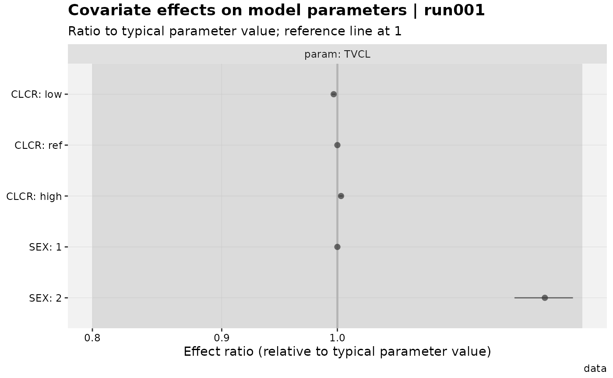

Visualizes the effect of covariates on structural parameters, as
declared with add_cov_association(), as a forest plot: one row per
(parameter, covariate, evaluation point), the point estimate and
interval as a ratio to the parameter's typical value, with a reference
line at 1.
This is the covariate-specific wrapper: it calls prm_cov() to
compute the effect-size table and xplot_forest() (a generic,
forest-plot-agnostic renderer, see its own documentation) to draw it.
Usage
cov_forest(
xpdb,
...,
type = "pilr",
region = NULL,
show_ref = TRUE,
log = TRUE,
forest_opts = list(),
title = "Covariate effects on model parameters | @run",
subtitle = "Ratio to typical parameter value; reference line at 1",
caption = "@dir",
tag = NULL,
.problem = NULL,
.subprob = NULL,
.method = NULL,
quiet
)Arguments
- xpdb
<
xp_xtras> object with covariate associations declared viaadd_cov_association()- ...
<
dynamic-dots> Forwarded toprm_cov()– egparam ~ covariateselectors,ci_method,probs,level,nsim.- type
Passed to
xplot_forest(); defaults to'pilr'(point + interval + reference line + shaded reference region –xplot_forest()'s own defaults omit the line and region, since those arecov_forest()- specific opinions, not generic ones). Including"v"adds a violin/density layer of the raw simulation draws behind each interval; this forcesprm_cov(keep_draws = TRUE), which in turn requiresci_method = "simulation"(the default) – passci_method = "delta"in...together withtypecontaining"v"and it will error, since no draws exist for the delta method.- region
<
numeric(2)>c(low, high)bounds for the shaded reference region (typeincludes"r", the default);NULL(default) falls back toc(0.8, 1.25), a common bioequivalence-style "no relevant effect" band.- show_ref
<
logical> Include the reference row(s) (effect/ci_low/ci_highalways1, by construction, for every reference covariate value/level)? Defaults toTRUE; setFALSEto drop them from the plot – they carry no information beyond what the reference line already shows, and cutting them can reduce clutter when there are many covariates.- log
<
logical> Log-scale the effect-ratio (x) axis? Defaults toTRUE. Unlike most of the package'slogarguments (egeta_vs_contcov()'s), this is a plain boolean rather than an"x"/"y"/NULLaxis-selector string –cov_forest()'s orientation isn't user-configurable, so the axis being logged is never ambiguous.- forest_opts
<
list> Extra named arguments forwarded toxplot_forest()(eg theme overrides), the same waypairs_optsworks forcov_grid()/eta_grid(). Rarely needed since the most common override,type, is already its own argument.- title
Plot title
- subtitle
Plot subtitle
- caption
Plot caption
- tag
Plot tag
- .problem
<
numeric> Problem number- .subprob
<
numeric> Subprob number- .method
<
numeric> Method- quiet
Silence extra output
Examples
# \donttest{
xpdb_x %>%
add_cov_association(
TVCL ~ power(CLCR, THETA7, ref = 64),
TVCL ~ catshift(SEX, THETA4, ref = 1)
) %>%
cov_forest()
#> Using data from $prob no.1

# }